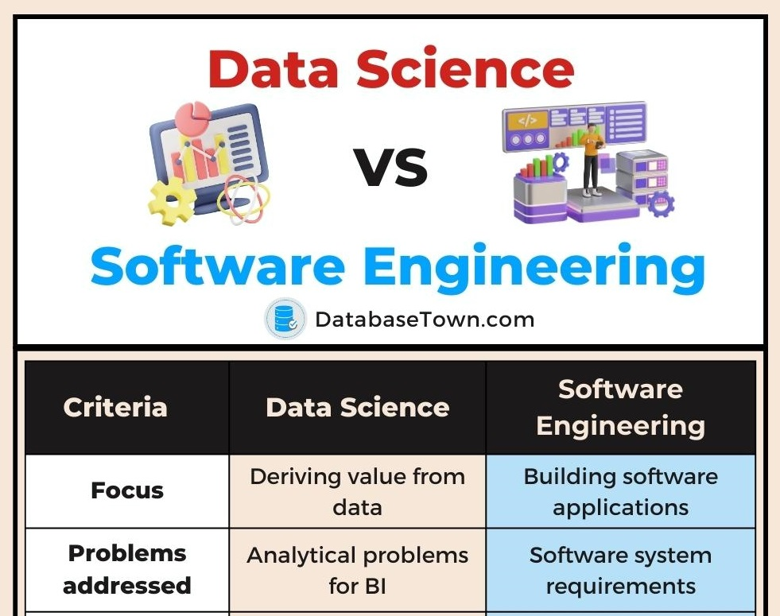
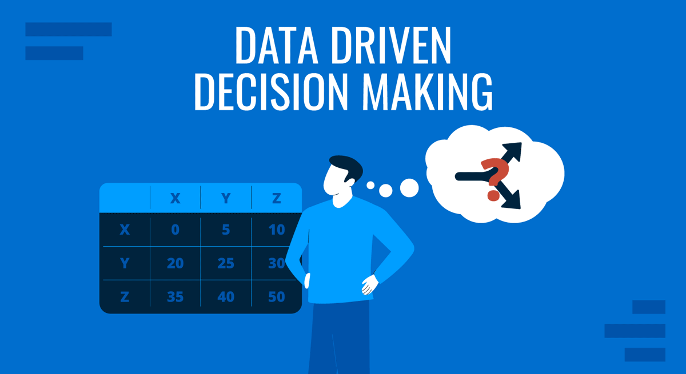

Why Every Software Engineer Should Learn Data Science
Written by Muhammad Saayid Shah | Published on | Reading Time: 5 minutes
In today's technology-driven world, the line between software engineering and data science is blurring. As a software engineering student who is also pursuing data science, I've discovered that combining these two fields creates incredible opportunities. In this post, I'll explain why every software engineer should add data science to their skillset.

1. Increased Career Opportunities
The demand for professionals who understand both software engineering and data science is skyrocketing. Companies are looking for engineers who can not only build applications but also integrate machine learning models and analyze data. According to industry reports, hybrid roles like "Machine Learning Engineer" and "AI Engineer" are among the fastest-growing job categories. By learning data science, you position yourself for these high-demand roles.
2. Better Decision Making
Software engineers who understand data science can make better technical decisions. Instead of guessing which features to build or how to optimize performance, you can analyze user data, track metrics, and make data-driven decisions. This leads to more successful products and features that users actually want and need.

3. Ability to Build Intelligent Applications
Modern applications are expected to be "smart." Users want personalized recommendations, predictive features, and intelligent automation. When you combine software engineering with data science, you can build applications that learn from user behavior and improve over time. From recommendation systems to fraud detection, the possibilities are endless.
📊 Click to see a real-world example: How Netflix uses Data Science
Netflix is a perfect example of software engineering meeting data science. Their recommendation system analyzes:
- What you watch
- When you watch
- How long you watch
- What you rate highly
- What similar users enjoy
This data powers their recommendation engine, which saves Netflix over $1 billion annually by reducing customer churn. As a software engineer with data science skills, you could build systems like this!
4. Higher Salary Potential
According to salary reports, professionals with both software engineering and data science skills earn significantly more than those with just one skillset. Companies value the versatility and problem-solving abilities that come from understanding both disciplines. Investing time in learning data science is an investment in your future earning potential.
5. Future-Proof Your Career
Artificial intelligence and machine learning are transforming the software industry. Engineers who understand these technologies will be better equipped to adapt to future changes. By learning data science now, you're not just adding a skill—you're future-proofing your entire career.
💡 My Personal Learning Journey (Click to expand)
As a 4th-semester software engineering student, I've already started my data science journey. Here's what I've learned so far:
- Python Libraries: NumPy, Pandas, Matplotlib, Seaborn
- Database Skills: MySQL for data storage and querying
- Statistics: Calculus I, Calculus II, Linear Algebra, Discrete Structures
- Next Goals: Machine Learning with Scikit-learn, Deep Learning, Big Data tools
My goal is to become a Full Stack Developer AND Data Scientist by the end of my BS degree. The journey is challenging but incredibly rewarding!
How to Get Started
If you're a software engineer interested in data science, here's a simple roadmap:
- Master Python - Focus on data manipulation libraries (Pandas, NumPy)
- Learn Statistics - Understand probability, distributions, and hypothesis testing
- Study Machine Learning - Start with Scikit-learn, understand algorithms like regression and classification
- Practice with Projects - Build real projects using real datasets (Kaggle is a great resource)
- Learn SQL - Data scientists need to query databases effectively
- Understand Visualization - Learn to communicate insights with tools like Matplotlib and Seaborn
📈 Sample Python Code: Basic Data Analysis
import pandas as pd
import numpy as np
import matplotlib.pyplot as plt
# Create sample data
data = {
'Student': ['Ali', 'Fatima', 'Ahmed', 'Sara', 'Usman'],
'Python_Skill': [85, 92, 78, 95, 88],
'DataScience_Interest': [90, 95, 80, 98, 85]
}
df = pd.DataFrame(data)
print("Student Data:")
print(df)
# Calculate average
print("\nAverage Python Skill:", df['Python_Skill'].mean())
print("Average Data Science Interest:", df['DataScience_Interest'].mean())
# Simple visualization
plt.bar(df['Student'], df['DataScience_Interest'])
plt.title('Data Science Interest by Student')
plt.xlabel('Student')
plt.ylabel('Interest Level')
plt.show()
Output: This code creates a DataFrame and visualizes data science interest levels across students. Simple yet powerful!